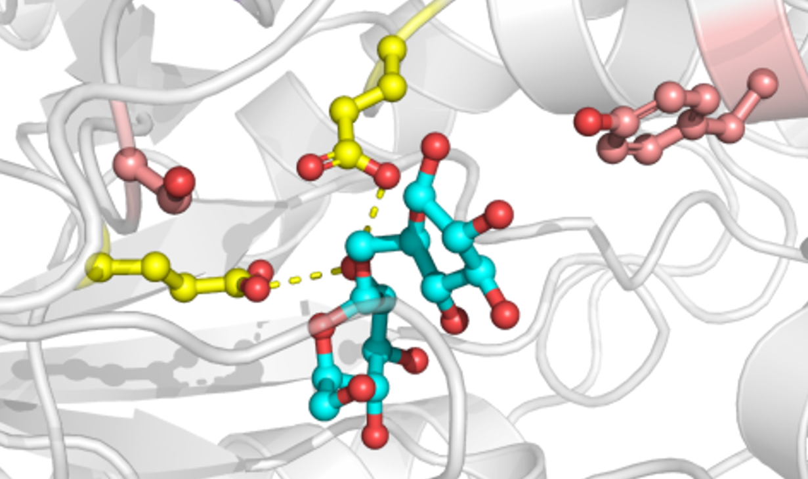

Protein function emerges from a highly coupled three-dimensional scaffold in which substitutions can influence interactions far beyond an active or binding site. This complexity makes it difficult to distinguish residues that merely vary from positions constrained by structure, chemistry, or compensatory evolution, complicating both mechanistic interpretation and rational protein engineering. A2CA integrates multiple sequence alignments, phylogenetic trees, amino-acid physicochemical properties, optional protein structures, and pairwise coevolution analyses to place residue-level variation into an evolutionary context and help prioritize positions for experimental investigation.
Contact: Dr. Daniel Eggerichs

Choose the entry point that matches your available data. A2CA can retrieve homologous proteins from a single sequence or protein structure with NCBI BLAST, generate an alignment and phylogeny from unaligned FASTA sequences, or start directly from a prepared alignment and tree.
The original R/Shiny implementation of A2CA is archived as: D. Eggerichs, D. Tischler; Science Data Bank (2023), DOI: www.doi.org/10.57760/sciencedb.09549.
Source code, version history, and future releases are maintained in the A2CA GitHub repository.